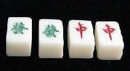
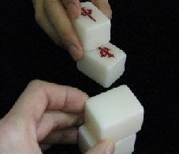
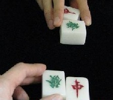

Tile colection 珍奇牌。
（51）ギミック牌
オクソンを見ていたら、手品用の麻雀牌が出品されていた。
説明を読んでみると、なかなか面白い。
と
が各２枚づつで計４枚ある。


そのあと 相手に渡した
１枚が
という手品。

もちろん牌に仕掛けがある（と思う...）。と云っても、方法は公開されていない。落札という
か、購入すれば説明書がついてくる。
この牌を使って大三元を決めてやろうかと思ったが、いくら何でも牌の種類が違いすぎ
る(^-^； そこで三元牌だけでなく、数字１つ違いの数牌、１字違いの風牌など 全牌に仕
掛けを施したセットを作ることを思いついた。そうすれば轟盲牌という荒技など使わなくて
も、例会は連戦連勝 and 役満のオンパレード。(^-^； う〜ん、誘惑にかられる...（笑）